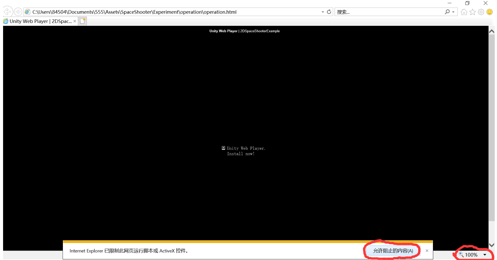
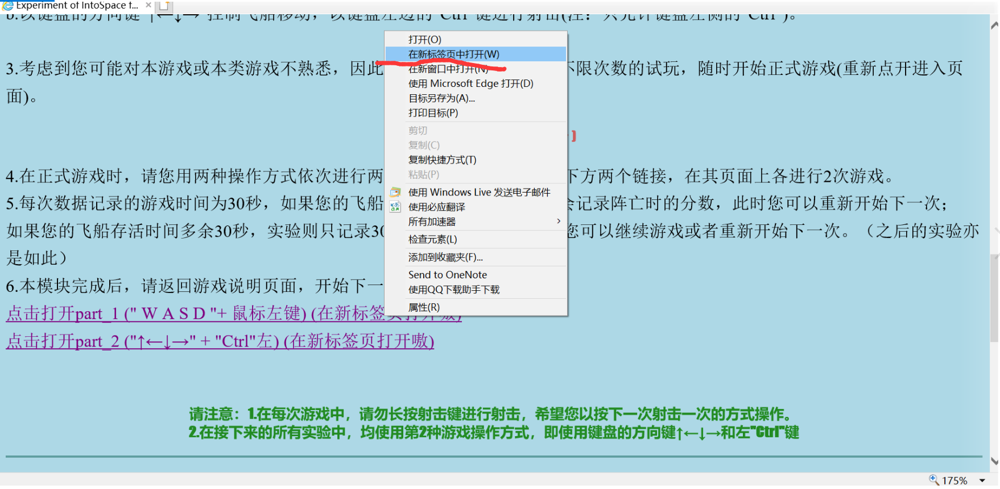

1.本实验旨在研究游戏交互体验的一些影响因素，所获得的实验数据不会有任何其他用途，请您放心参与。
2.本实验包括三个模块，分别是：操作方式(2 parts)、玩家移动速度(2 parts)、背景音乐的测试(2 parts)，
每个链接（part）需要进行两次游戏，也就是说，您一共需要操作12次游戏，每次游戏时间大约30秒(游戏页面设置了30秒倒计时器)，按'R'键重新开始。
3.在实验开始之前，请您仔细阅读以下游戏说明。并且在游戏过程中，您可以随时返回当前页面重读。
4.在正式开始游戏之前，您可以不限次数地试玩游戏("试玩"文件夹)，直到您认为对游戏操作熟悉。
5.在游戏过程中，请不要过于在意自己的得分。
6.在游戏过程中若有任何问题或不适，您可以随时暂停进行休息或者退出游戏，与作者交流。
十分感谢您的参与！
1.佩戴耳机，调节耳机音量
2.如果您是Windows用户，请确保您使用的是ie浏览器("Internet Explorer")，并且下载了Unity web player。
3.请在实验整个过程中录屏(第一次阅读到此处时或之前开始录屏)，事后保存并发送给作者，以此统计数据。
4.每次打开游戏页面或者实验说明页面时，页面会提示您，浏览器已限制此脚本或控件，请点击“允许阻止的内容”。
甚至防火墙或者浏览器可能提醒您危险来临，请您一概选择"允许"，就可以正常加载啦。
(请您放心，千万不要怀疑会对您的电脑植入病毒，这是作者的心血、宝贝，它是无毒的>_< )
5.请Windows用户打开实验说明页面后，将右下角页面放大为175%；而打开每个游戏页面后，将右下角页面放大为100%；
（上图示意页面放大为%175的操作，放大为%100同理；下图为新标签页打开方式）


1.在游戏中，玩家需要做两件事：1).控制您的飞船移动；2).射击。
2.本实验提供两种操作方式，它们即为该模块的两个部分：
a.键盘的" W A S D "控制飞船移动，点击鼠标左键射击。
b.键盘的方向键"↑←↓→"控制飞船移动，按键盘左边的"Ctrl"键射击(注：只允许键盘左侧的"Ctrl")。
( 提醒：按' R '键重新开始 )
3.在正式游戏时，请您用两种操作方式依次进行两个部分的游戏----分别点击下方两个链接，各进行2次游戏。
4.每次数据记录的游戏时间为30秒，如果您的飞船在30秒之内阵亡，实验会记录阵亡时的分数，此时您可以重新开始下一次；
如果您的飞船存活时间多余30秒，实验则只记录30秒时刻您的分数，此时您可以继续游戏或者重新开始下一次。（之后的实验亦是如此）
5.本模块完成后，请返回游戏说明页面，开始下一模块。
点击打开part_1 (" W A S D "+ 鼠标左键) (在新标签页打开嗷)
点击打开part_2 ("↑←↓→" + "Ctrl"左) (在新标签页打开嗷)
请注意：1.在每次游戏中，请勿长按射击键进行射击，希望您以按下一次射击一次的方式操作。
2.在接下来的所有实验中，均使用第2种游戏操作方式，即键盘的方向键↑←↓→ + 左"Ctrl"键
模块介绍：本模块包括两个部分，仍然是每个部分进行两次游戏。
请您依次打开以下两个个实验游戏链接（在新标签页中打开），进行游戏（注意操作方式为"↑←↓→" + "Ctrl"）：
1.点击打开part_1 ("↑←↓→" + "Ctrl"左)(在新标签页打开嗷)
2.点击打开part_2 ("↑←↓→" + "Ctrl"左)(在新标签页打开嗷)
本模块完成后，请返回游戏说明页面，开始下一模块。
（恭喜你！你马上要完成实验啦！真是辛苦你了！）
模块介绍：本模块包括两个部分，仍然是每个部分进行两次游戏。
请您依次打开下面两个链接，进行游戏（注意操作方式为"↑←↓→" + "Ctrl"）：
1.点击打开part_1 ("↑←↓→" + "Ctrl"左)(在新标签页打开嗷)
2.点击打开part_2 ("↑←↓→" + "Ctrl"左)(在新标签页打开嗷)
本模块完成后，实验进行完毕~您可以将本次录屏发送给作者，并向她索要夸奖和报酬~也可以向她吐槽这款如此简单粗糙的游戏和复杂的实验~
您也可以继续体验本游戏，享受简单游戏的快乐~
非常感谢您的参与！祝您天天开心，万事如意！